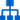

Drag&Drop GUI Editor
Designing your application cannot be easier, with the visual designer editor, just drag & drop and customize your widgets.
The GUI Inspector allows you to simply setup CSS properties, autosizing and magnets.
 Code Editor
Code Editor
Using Ace Editor, we are sure to offer you the best editor available to write code. With Syntax highlighting, Auto indentation and outdent, Search and replace with regular expressions, Highlight matching parentheses and lot of more features, you'll have all you need to code peacefully.
 Dataflow programming
VSD proposes a Data Flow Programming visual editor for your application. In flow-based programs, the logic of your software is defined as a graph. The nodes of the graph are instances of ViniSketch components, and the edges define the connections between them.
Data propagation across the graph is automatic and, the graph is optimized and precompiled to minimized code execution and DOM modifications.
Multi device management
With an advanced multitarget engine, you can manage your application for each device you're targeting. You can develop specific code for a device or disable some features on other device.
The system let you design specific layout for each device and or orientation.
Debug
- HTML5 simulator and debug tools based on WebKit WebInspector;
- Live debugging tool.
Build/Export
Automatic PhoneGap project generation.
Supports generation of Cordova 3 project, that makes easy to manage multiple platform project.
Videos
Videos are availablehere